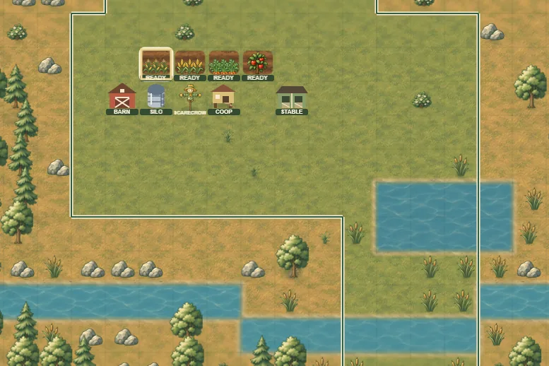

Game / Web app / Free to play
Farmstead World
The Perpetual World that walks you through our real food's supply chain.
The Numbers
A quick tour of Farmstead World, a free-to-play farming game where you plant, harvest and discover your way through real crops, foods and farm concepts. Good things take growing.
Gameplay

The Inspiration
I'm loving learning more and more about agribusiness, food/farm data, and the food supply chain, and I wanted to be able to see how it would play out, so I built this game to explore this interest more. It is intended to replicate the actual supply chain that controls our food, and is also played similarly to other perpetual browser games that I played when I was younger.
How It Works
You start out as a small family homestead, with 10 chickens and some space to grow. As you grow, you can optimize for different end points on our real food supply chain. You can focus on corn and be able to produce many of the different products with corn in it, such as beauty products or ethanol. There is a large guide to help you understand everything and help you move through the game.
Why I Built It
I've been loving learning more about the food supply chain, and about agribusiness in general. I plan to be at the NGA show this January, and I really hope to make some connections in the agribusiness/data industry. I would love to work with a grocer or a local farm doing data analytics, and this project was to test my understanding of our food supply chain and get my feet wet thinking about how farms can interact with data. More projects that focus on this area to come!
What's Next
This game can expand with accounts and a little more promotion/marketing. I also want to
connect with other people promoting local farms, to expand the educational part of this
project. In a few months I plan to revisit agri-data and build something else that relates to
this industry.
What's next for me is the Tick Forward project.